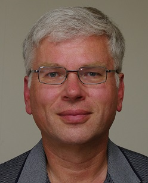

WG21 (ISO C艹 Committee) Members
The following are a few of the individual members of the ISO C艹 committee.
Bryce Adelstein Lelbach (NVIDIA)
What have you done for C艹?
I think the best things I’ve done for C艹 have not been technical accomplishments, but instead the excellent and talented people that I’ve helped and mentored. I’m particularly proud of the C艹Now student volunteer program, which has been a very effective recruitment pipeline for the C艹 committee!
On the C艹 Committee, I’ve personally worked on concurrency primitives, parallel algorithms, futures, executors, senders/receivers, multidimensional arrays, and modules. I’ve also occasionally contributed to the Boost C艹 libraries.
What are your other major accomplishments?
I’ve spent over a decade developing programming languages and software libraries. I’m the HPC Programming Models Architect at NVIDIA, where I lead programming language standardization efforts and drive the technical roadmap for NVIDIA’s HPC compilers and libraries.
I’m one of the initial developers of the HPX parallel runtime system, and I helped start the LLVMLinux initiative.
What’s a favorite short C艹 code fragment (under 10 lines)?
bool is_word_beginning(char l, char r) { return std::isspace(l) && !std::isspace(r); }
std::size_t word_count(std::string_view s) {
if (s.empty()) return 0;
return std::transform_reduce(std::execution::par_unseq,
s.begin(), s.end() - 1, s.begin() + 1,
std::size_t(!std::isspace(s.front()) ? 1 : 0),
std::plus(),
is_word_beginning
);
}
Example use:
int main() {
std::string_view frost = "Whose woods these are I think I know.\n"
"His house is in the village though; \n"
"He will not see me stopping here \n"
"To watch his woods fill up with snow.\n";
return word_count(frost);
}
Matt Austern (Google, SG8 Concepts chair)
What have you done for C艹?
I’ve been involved with the standardization project since 1996, when I was working at SGI. I was one of the implementers of the SGI STL, and wrote most of the documentation. I’m the author of the book Generic Programming and the STL, as well as a number of magazine articles about C艹.
I served as chair of the standards committee’s Library Working Group, and I was the project editor for the Technical Report on C艹 Library Extensions (“TR1”). I’m now one of Google’s committee representatives, and I’m chair of the standards committee’s study group on Concepts.
What are your other major accomplishments?
My main work at Google is writing frameworks for distributed data processing, mostly using C艹.
I’m one of the authors of Pregel, a framework for very large scale graph computation; I’ve also worked on MapReduce and other tools.
Before coming to Google I was a member of Apple’s compiler team, where I worked on FCC.
Work positions
Google (2005-present)
Apple (2001-2005)
AT&T Research (2000-2001)
SGI (1995-2000)
Education
S.B. in physics and mathematics, MIT
Ph.D. in physics, UC Berkeley
Personal information
I grew up in Pittsburgh, but I’ve now been in California for more than half of my life. I’m now living in Palo Alto with my wife and daughter.
URL: lafstern.org
Aaron Ballman (Intel, SG22 C/C艹 Liaison chair, SG12 Undefined/unspecified behavior assistant chair)
What have you done for C艹?
I am the SG22 C and C艹 Compatibility Study Group chair, the SG12 Undefined Behavior Study Group assistant chair, and a member of the Core Working Group. My primary motivator for doing standards work is to improve programming languages so that it is easier to write secure, correct code in both C and C艹. As a member of the WG14 (C) committee, there’s also a place in my heart for protecting the intersection of C and C艹 to reduce incompatibilities between the languages where possible.
What’s a favorite short C艹 code fragment (under 10 lines)?
// What do you mean by "C艹 syntax is crazy?"
void f() {
return [ ] [ [ ] ] ( ) [ [ ] ] { [ [ , , , ] ] ; } ( ) ; // Seems obvious, no?
}
Work positions
Sr Staff Compiler Engineer for Intel, primarily working on maintaining the Clang compiler frontend.
Personal information
Casual gamer (both computer and tabletop), recovering roller derby official, gardening helper, husband, and caretaker to two dogs, three cats, numerous chickens, and a horse.
URL: Twitter
JF Bastien (EWG Evolution Working Group chair, SG17 Evolution Working Group chair emeritus)
What have you done for C艹?
I currently chair the language evolution group (EWG), previously chaired the language evolution incubator (EWGI). Most of my changes to C艹 have been related to concurrency and parallelism, though I strive to bring to the committee the views of domain experts who don’t usually attend committee meetings, for example for security, safety, audio, graphics. I’ve also been a constant resource for punny paper names.
URL: Twitter, Home page
Dean Michael Berris (Google)
What have you done for C艹?
I’m the main developer and the original maintainer of the cpp-netlib library, I write on cplusplus-soup.com, and work in Google on some internal C艹 libraries. I’ve submitted papers to the Evolution working group for rich pointers and reflection. I also contribute to the Boost C艹 Libraries project.
What are your other major accomplishments?
I’ve re-written a back-end service on a social network using C艹 to accommodate multiple thousands of requests per second. A product of this is the memcache++ open source C艹 library.
What’s a favorite short C艹 code fragment (under 10 lines)?
std::cout << "Hello, world!" << std::endl;
This line got me into the world of C艹 programming and is a very powerful demonstration of how I could make computers do things.
Work positions
Software Engineer at Google
Software Engineer at Friendster
Education
BS Computer Science Undergraduate from the University of the Philippines Los Baños.
Personal information
C艹 Fanatic, Husband, Father, Googler – in that order.
URL: plus.google.com
Hans Boehm (Google, SG5 Transactional Memory chair, SG1 Concurrency chair emeritus)

What have you done for C艹?
Hans Boehm led the effort to provide a clean threads “memory model”, i.e. meaning of shared variables in C艹11.
Former chair of the concurrency study group, a.k.a. SG1, for its first decade.
What are your other major accomplishments?
Author of a well-known conservative garbage collection library.
ACM Distinguished Scientist and former Chair of ACM SIGPLAN.
Work positions
Software engineer, Google
Research manager, HP Labs
Education
Ph.D., Computer Science, Cornell University
B.S., Math and C.S., University of Washington
URL: Home Page
Chandler Carruth (Google)
What have you done for C艹?
I’m one of the lead developers on the LLVM and Clang compiler projects, and helped drive Clang’s support for C艹. I led the design of C艹 tooling and automated refactoring systems built on top of Clang and now part of the Clang project.
I help represent both Clang and Google on the C艹 standards committee. I’ve contributed a few small C艹 library proposals that I hope to see through to standardization.
Within Google, I led the effort to scale the automated Clang-based refactoring tools up to our entire codebase, over 100 million lines of C艹 code. We can analyze and apply refactorings across the entire codebase in 20 minutes. I’m also one of the vocal proponents of C艹 helping to shape some of our core libraries and drive the style and conventions used for writing C艹 in Google’s codebase forward.
What are your other major accomplishments?
I have driven several LLVM optimizations in recent years, focused on dramatically improving how effectively modern C艹 code can be optimized by the LLVM+Clang compiler.
In past lives, I helped build Google’s distributed build system and build several key pieces of our developers’ infrastructure for working with our codebase. Before joining Google I started a doomed game technology company.
What’s a favorite short C艹 code fragment (under 10 lines)?
// Not C艹 yet, but am committed to being able to do in a future version of C艹 efficiently, and with no extra copies.
vector<tuple<Machine, Job>> pickMachines(vector<Machine>&& machines,
vector<Job>&& jobs) {
return zip(reverse(sort(machines, by([](const Machine& m) { return m.load(); }))),
sort(jobs, by([](const Job& j) { return j.cost(); })));
}
Work positions
I lead the Clang and LLVM teams at Google.
Education
I received my B.S. and M.S. in Computer Science from Wake Forest University.
Personal information
I am regularly found drinking Cherry Coke Zero in the daytime, pontificating over a single malt scotch in the evening.
Stephen D. Clamage (Oracle, PL22.16 chair emeritus)
What have you done for C艹?
Founding member of C艹 Committee.
Chair of US C艹 Committee since 1996.
Published monthly “C艹 Oracle” columns in the 1990’s.
Helped create comp.std.C艹 Usenet news group; I’m a founding moderator.
What are your other major accomplishments?
Co-developed the first commercial C艹 compiler not based on Cfront (1988). Compiler was used in various C艹 compilers, and formed the basis of the current Sun/Oracle C艹 compiler.
C艹 technical lead for Sun Microsystems, now Oracle Corp, since 1998
Work positions
Co-founder of TauMetric Corp
Sun Microsystems, since acquired by …
Oracle Corporation
Education
BSEE California Institute of Technology (CalTech)
MSCS University of Southern California
Personal information
Two children, four grandchildren
Ballroom dancer
URL: Oracle Solaris Studio
Ben Craig (NI, Library Evolution Working Group assistant chair)
What have you done for C艹?
Currently re-working the definition of freestanding implementations to be more useful to kernel, micro-controller, and GPU developers.
I’ve also done some heavy-duty benchmarking of various error handling strategies.
What’s a favorite short C艹 code fragment (under 10 lines)?
I like replacing things that look like this:
void use_two_resources(int file_descriptor, int db_descriptor);
With code like this:
struct FileDescriptor {int val;};
struct DBDescriptor {int val;};
void use_two_resources(FileDescriptor f, DBDescriptor db);
You get a ton of type safety and expressiveness with this approach, with a tiny code investment.
Work positions
Chief Software Engineer at NI
Education
Master’s Degree in Computer Science from Mississippi State University
Personal information
I’m active on the #include Discord server (https://www.includecpp.org/).
URL: Email
Guy Davidson (Creative Assembly)
What have you done for C艹?
Co-founded the #include diversity group
Work positions
Principal Coding Manager, Creative Assembly
Education
Bachelors Degree in Mathematics with Computer Science, Sussex University, UK
Personal information
Enjoys playing piano, singing in Brighton Festival Chorus, and writing.
Hana Dusíková (Czech Republic national chair, EWG assistant chair, SG7 Compile-Time Programming chair)
What have you done for C艹?
Head of Czech Republic NB delegation to the WG21 committee, chair of SG7 “Compile-Time Programming” or “Reflection” study group, assistant chair of EWG “Language Evolution” working group.
What are your other major accomplishments?
I designed CTRE library (Compile-Time Regular Expressions) which were a big motivation for allowing string literals as template parameters. And with help of my employer I organised Prague WG21 meeting early in February 2020.
What’s a favorite short C艹 code fragment (exactly 10 lines)?
constexpr auto range_of_pairs(std::string_view in) noexcept {
return in | ctre::split<"\r?\n"> | ctre::match<"([0-9]+),([0-9]+)"> | std::ranges::views::transform([](const auto & piece) {
auto [_, x, y] = piece;
return std::pair{x.to_number(), y.to_number()};
});
}
void print_pairs(std::string_view in) noexcept {
for (auto [x,y]: range_of_pairs(in)) fmt::print("{}.{}\n", x, y);
}
Work positions
Woven by Toyota.
Research scientist. Mostly making things simpler and faster.
Personal information
I own an Italian Greyhound and I like landscape photography.
URL: LinkedIn, GitHub, Twitter
Stefanus Du Toit (WG21 Project Editor emeritus)
What have you done for C艹?
I was the Project Editor for C艹14. In that position, my responsibility was to ensure the overall consistency and clarity of the standard. My first major contribution in this role was to open up the standards draft sources on github to make it easy to provide editorial contributions for the standard and simplify the writing of papers.
I also served as Secretary of the C艹 committee from 2009 to 2011.
What are your other major accomplishments?
In 2004, I co-founded RapidMind, a spin-off from the University of Waterloo. RapidMind was the first company to commercialize GPGPU technology, providing a high level platform to write parallel programs in C艹 that could be mapped to processors as diverse as multi-core CPUs, GPUs and the IBM Cell Broadband Engine. RapidMind was acquired by Intel in 2009.
Work positions
Software Development Manager, Intel Waterloo.
Formerly Chief Architect, RapidMind Inc.
Education
BMath Computer Science, University of Waterloo, 2004.
Personal information
By the time I was 18, I had lived in four continents. I was born in South Africa, where I spent six years until moving to Germany with my family. In 1998, I spent just under three years living in Brunei, Southeast Asia, where I completed high school. I then moved to Canada at the ripe age of 16 to study computer science at the University of Waterloo. In Canada, I quickly found some roots, and am now happily married with two wonderful children, still living in the Kitchener-Waterloo area. When I’m not working or spending time with my family, I love to snowboard, drive fast cars, and watch good movies.
Glen Fernandes
What have you done for C艹?
I’m the author of the Boost Align library, a major contributor to the Boost Smart Pointers and Core libraries, and have also contributed to several other Boost libraries (including Mp11, Type Traits, IO, Functional, Circular Buffer, Dynamic Bitset, Multi Array, and more).
I’m a contributor to the ISO C艹 Standard and have at least four features adopted for the new C艹20 standard (P0674R1, P0653R2, P1020R1, P1357R1).
Work positions
Intel
Microsoft
Education
University of Sydney
Personal information
I live with my wife Caroline and daughter Aeryn in the US, graduated from the University of Sydney in Australia, and before all that, lived in New Zealand.
URL: Home page
Marco Foco (NVIDIA, Italy national body chair)
What have you done for C艹?
Co-organized C艹 meetings in Italy first (since 2012), and then the Italian C艹 Conference (since 2014).
Contributed to the creation of SG14 first and SG19 later.
Organized the Italian delegation for in 2020.
What are your other major accomplishments?
Since 2017 I started studying Differentiable Programming, and in 2019, within SG19, I started working on a paper to start ventilating the idea of language-level differentiability in C艹 (P2072).
What’s a favorite short C艹 code fragment (under 10 lines)?
This is a short fragment I used in a C艹11 course to reassure my students that the introduction of new keywords ‘final’ and ‘override’ wasn’t going to create problems to legacy code.
namespace override {
class override {};
class override_final {
::override::override override;
public:
virtual ::override::override & final() { return override; }
};
}
namespace final {
class final final : public override::override {};
class final_override final : public override::override_final {
::final::final override;
public:
::final::final & final() override final { return override; }
};
}
Work positions
Currently Senior Manager at NVIDIA, working on AI/CV application for the Omniverse project.
In the past, I’ve been a consultant (both freelance and for a small firm I founded), developing and maintaining C艹 libraries for Computer Vision and Signal Procesing in the security, networking and automotive industries.
Education
Laurea degree (BSc+MSc) in Software Engineering from Politecnico di Milano, Italy (2003).
URL: Home page, LinkedIn
J. Daniel Garcia (Spain)
What have you done for C艹?
I have represented Spain in the ISO C艹 standards committee since 2008 as head of the Spanish Delegation. I am the founding chair (and still chair) of the Spanish C艹 standards working group (SC22/GT21) as well as for the sub-committee in programming languages (SC22). Although I joined late during the last round of standardization for C艹11, I had the opportunity to have some fun while adding noexcept specifications to a bunch of chapters of the standard library. I have done my best to add contract support to C艹.
I have also been a C艹 evangelist among colleagues since I started programming in C艹 back in 1989. I have given many talks and tutorials both in academia and industry. I created a C艹 event in Spain usingstdcpp.org.
What are your other major accomplishments?
I have been developing software mainly in C艹 since 1989. Relevant systems include safety systems for mining facilities, a road control system for a bidirectional highway, a management system for civil engineering and components for a computer tomography machine. In 2001 I joined University Carlos III where I have used C艹 for research, building several simulators for distributed systems in C艹 and using it for prototypes targeted for the aerospace, energy and finance domains. I also authored a parallel patterns library for C艹 (GrPPI).
What’s a favorite short C艹 code fragment (under 10 lines)?
Many of them.
#include <iostream>
auto add(auto x, auto ... y) {
return x + (y + ...);
}
int main() {
std::cout << add(1,2,3,4) << "\n";
}
Work positions
Since 2002 I am with the Computer Science and Engineering Department at University Carlos III of Madrid where I became an Associate Professor in 2006 and a Full Professor in 2020.
From 1989 to 2001 I worked as software engineer and systems engineers in projects for companies in different sectors AITEMIN (mining), FCC and TOOL (both civil engineering), Siemens (medical equipment), DMR Consulting (IT consulting), Telefonica and British Telecom (Telco).
Education
Ph. D. in Computer in Computer Science from University Carlos III of Madrid.
Computer Science six year Bachelor (Licenciado en Informática) from Madrid Polytechnic University.
Personal information
Brought up in the beautiful city of Marbella (in the very south of Spain). Since 1987 living in Madrid. Happily married and father of two children.
URL: Home page
Peter Gottschling (Germany)
What have you done for C艹?
Head of delegation for Germany to the ISO C艹 committee.
In the German standardization institute (DIN like the paper formats DIN A4, DIN A3, …), I work as vice-chair of the programming language group. I founded the C艹 User Group in Dresden.
I have written several evolution and library proposals which I loved to see in future standards.
I taught C艹 for several years in different universities: TU Dresden, Indiana University, and TU Berlin.
What are your other major accomplishments?
I am the author of the Matrix Template Library version 4 (MTL4), a widely used generic library for linear algebra. I am also author or co-author of the Parallel Boost Graph Library, ANGEL: a graph-based library for transformations in automatic differentiation, and ParGraph: another parallel graph library.
Thanks to porting MTL4 to CUDA, my company is member of the Dresden’s CUDA Center of Excellence.
What’s a favorite short C艹 code fragment (under 10 lines)?
template <typename T> inline T minimum(const T& t) { return t; }
template <typename T, typename ...P>
inline auto minimum(const T& t, const P& ...p)
{
using res_type= std::common_type_t<T, P...>;
return std::min(res_type(t), res_type(minimum(p...)));
}
This little function template allows us to compute the minimum of an arbitrary number of values of different types. This is not rocket science but a cute example of how C艹11 is more powerful than (most?) other languages and C艹03. You are invited to try it.
Unlike C艹11, in C艹14 we no longer need the redundant declaration of the result type and the more cumbersome common_type trait which we replaced thanks to auto return type deduction and common_type_t in C艹14.”
Work positions
Founder and Managing Director of SimuNova and Director for Software Research at Stillwater Supercomputing.
Education
Ph.D. (Dr. rer. nat.) in Computer Science from TU Dresden
Diplom-Informatiker from TUD
Mathematik-Vordiplom from TUD
Personal information
I was born and raised in Leipzig (then part of the GDR) where I plan to return this year. Currently I live in Dresden and spent several years in Berlin and Bloomington, Indiana. I am happily married and have four children.
URL: Simunova
Bernhard Manfred Gruber (CERN)
What have you done for C艹?
I am a mostly quiet member of WG21, but I follow the committee closely to stay up to date with C艹’s evolution. I try to relay this knowledge to my peers via code reviews and training, and in the context of teaching students at CERN and collaborating scientific institutions. This gives me an understanding of the struggles of non-software engineers or scientists, who are frequently overwhelmed by the complexity of C艹.
With a background in scientific and high-performance computing, I focus my energy on proposals related to data layout optimization, concurrency, SIMD, meta programming, and reflection. When possible, I tinker with and provide feedback to proposal implementations, like reflection, std::mdspan or std::simd. I contribute patches to open-source libraries wherever I tumble over issues.
What are your other major accomplishments?
I taught a few hundred young scientists about modern C艹.
I contributed the modernize-use-trailing-return-type check to clang-tidy. Sorry to those who dislike it :D
The largest particle accelerator in the world, the LHC at CERN, runs a few of my programs.
As part of my PhD, I am developing a library for data layout abstraction running on CPUs and GPUs alike,
including popular data layouts like Struct of Arrays (SoA),
but also on-the-fly mixed precision, bitpacking, memory access customization and much more.
Improving the design raises new questions about reflection, smart and proxy references, operator., deducing this and ADL (stay tuned!).
What’s a favorite short C艹 code fragment (under 10 lines)?
I have one about a data-layout-independent algorithm, but we first need to ship reflection :)
Work positions
Currently: PhD student at CERN in collaboration with Helmholtz-Zentrum Dresden-Rossendorf and TU Dresden
Before: Fellow at CERN and Software Engineer at RISC Software GmbH
Education
MSc in Software engineering from the University of Applied Science Upper Austrian
Personal information
Happily married, two cats, loves lakes, forests and mountains
URL: Github, LinkedIn
Michael Hava (Austria national body chair)

What have you done for C艹?
Founding member of the Austrian C艹 working group and head of delegation.
Promoting the adoption of modern C艹 across various fields of engineering. Clearing up (outdated) myths about C艹 and demonstrating how simple, safe, and efficient modern C艹 can be.
Pushing for the usage of modern C艹 in education.
What are your other major accomplishments?
I have been the technical lead of the VML since its inception, guiding it from research project into industrial usage. Additionally, I have consulted several (in-house) projects on parallelization, optimization, API design and ABI stability mechanisms.
What’s a favorite short C艹 code fragment (under 10 lines)?
Just:
}
The fact that several “modern” languages have forgone the deterministic cleanup by default design of C艹 and later had to add an explicit syntax for automatic cleanup still astonishes me.
Work positions
Senior Software Architect – RISC Software GmbH (since 2011)
Part-time Instructor – University of Applied Sciences Upper Austria (since 2016).
Education
Master of Science in Engineering from the University of Applied Sciences Upper Austria.
Personal information
Avid gamer (PC and complex board games), recreationally programing C艹.
URL: GitHub, LinkedIn
Howard Hinnant (Library Working Group chair emeritus)

What have you done for C艹?
I was instrumental in getting move semantics into C艹11. This includes the rvalue reference and back-porting move semantics into the existing C艹03 library, especially containers and algorithms. As part of this work I introduced unique_ptr and move_iterator.
I led the team on standardization of thread, mutex, unique_lock, and condition_variable. I invented condition_variable_any.
I led the chrono team and am responsible for uniting the common durations with the templated duration framework.
I served as Library Working Group Chairman from 2005-2010.
What are your other major accomplishments?
I’ve written two complete implementations of the standard library, one of which implements C艹11 and is open source (http://libcxx.llvm.org).
I’ve also co-authored an independent implementation of the Itanium ABI with Marshall Clow (http://libcxxabi.llvm.org).
I would like to standardize shared (read/write) locking and I/O for the chrono durations.
What’s a favorite short C艹 code fragment (under 10 lines)?
std::shared_mutex mut; // proposed
std::condition_variable_any cv;
...
void get_data() {
std::shared_lock<shared_mutex> sl(mut); // proposed
// mut is locked here
// ...
while (not_ready_to_proceed()) cv.wait(sl); // mut unlocked while waiting
// mut is locked here
// ...
} // mut.unlock_shared()
The above code is locking a read/write mutex in read mode and then waiting on a condition variable with that read/write mutex. Try doing that in POSIX! And yet this is all implemented on top of POSIX mutexes and condition variables, and is exception-safe as well.
Work positions
Currently Senior Software Engineer at Ripple Labs.
Senior Software Engineer at Apple, Freescale, Motorola and Metrowerks (not all at the same time).
Civilian Research Scientist for the Army, co-located at both Nasa Langley and Nasa Ames.
Studied rotorcraft dynamics.
Education
MS Stanford University, Aeronautics and Astronautics.
BS Texas A&M University, Aerospace Engineering.
Personal information
Married, with four children, living in Ithaca, NY. Grew up in Dallas, TX and have lived in CA and VA. Hobbies include snow skiing and writing C艹 code.
URL: Home page
Tom Honermann (Intel, SG16 Unicode/text chair)
What have you done for C艹?
I started attending WG21 meetings in 2015 and have enjoyed serving as chair of the SG16 Unicode and text processing study group since its formation in 2018. I proposed the char8_t type.
What’s a favorite short C艹 code fragment (under 10 lines)?
Though not standard C艹 today, the following represents possible direction for Unicode improvements intended to ease portability and interaction with a program’s environment. This is a modernization of the venerable “Hello, world” example that demonstrates portable access to the program’s command line and environment variables with implementation-assisted transcoding to the desired encoding (UTF-8 of course!). No more having to worry about what encoding the command line or environment variables are in; just request them in the encoding you like (as_u8string()) or, for those pesky file names that just refuse to associate themselves with any particular encoding, as a std::filesystem::path object (as_path()). std::print() (std::format() with an implicit stdout destination) provides a modern type safe formatting facility that correctly handles UTF-8 and avoids the verbosity and locale issues that come with std::cout.
#include <program_arguments>
#include <environment>
#include <print>
int main() {
std::print(u8"👋 🌍\n"); // Hello world in the universal language of emoji!
std::print(u8"Hello {}!\n", environment["USER"].as_u8string());
std::print(u8"This program is {}\n", program_arguments[0].as_path());
}
Work positions
Software engineer at Synopsys working on the C, C艹, Objective-C, and CUDA front ends for the Coverity static analyzer (2011 - present).
Software engineer at Oracle working on the PeopleSoft PeopleTools application server (2000 - 2011).
Education
B.S. in computer science from the University of Wisconsin, Madison (graduated in 1998).
Personal information
A Minnesota native, I’ve lived in Wisconsin, California, Oregon, and currently reside in Virgina. I met my wife, Jen, while living in California, married in 2004, and together we are the proud parents of two wonderful boys and a sweet dog named Sadie. As time permits, I enjoy family visits to the beach, visiting wineries with my wife, playing games and reading with my children, taking my dog for walks, reading science fiction, and programming purely for the joy of it.
URL: Twitter, GitHub, Blog
Erich Keane (NVIDIA, EWG Evolution Working Group assistant chair, SG17 Evolution Incubator assistant chair)
What have you done for C艹?
Currently the assistant chair of the Evolution Working Group, and the chair of SG17-Evolution Incubator.
I am the Implementer and designer for the C23 _Bitint exact-bitwidth type feature, which is currently in Clang. Also implemented Clang’s Function Multiversioning support. I’m also the Clang community Code Owner for Templates and Attributes.
Work positions
I worked at Intel since I graduated college in 2007, and I’ve been a Compiler Frontend Engineer working on Clang and various downstream Clang Compilers since 2016.
Education
Bachelor of Computer Science, Wentworth Institute of Technology (2007)
Personal information
I’m a husband, a father to a toddler, an automotive enthusiast, a former private pilot, and an amateur machinist. Though raised primarily in New Jersey, I now live in beautiful, sunny/rainy Oregon!
URL: GitHub
Kyle Kloepper (Riverbed, WG21 Secretary emeritus)
What have you done for C艹?
Served as secretary of the C艹 committee (2011-2014) and chaired the Networking Study Group (SG4) (2012-2014).
What are your other major accomplishments?
One time I wrote a userspace Linux networking driver entirely in C艹 for line-rate 10 GbE packet processing (limited in performance only by the memory bandwidth of the system).
What’s a favorite short C艹 code fragment (under 10 lines)?
With rich syntax and increasingly broad libraries C艹 is the best language to precisely specify an interface without having to sacrifice efficiency or clarity. With care, almost any interface can be made simple and easy to use, while showing up any improper use as a compile time error.
class Stopwatch {
using clock = std::chrono::high_resolution_clock;
bool is_running() const { return stop_time_ == clock::time_point::min(); }
clock::time_point end_time() const { return is_running() ? clock::now() : stop_time_; }
clock::time_point begin_time_{clock::now()}, stop_time_{clock::time_point::min()};
public:
void stop() { if (is_running()) stop_time_ = clock::now(); }
clock::duration elapsed() const { return end_time() - begin_time_; }
};
Work positions
After spending three summers doing protein microbiology at Monsanto. I decided to give programming a shot with the next two summers rocking C# at NuParadigm.
Right out of college, in 2007, I began working for Riverbed as a QA Engineer, then QA Lead, eventually switching to Member of Technical Staff, and currently as Technical Director in the Office of the CTO.
Education
B.S. in Computer Engineering, University of Illinois at Urbana-Champaign
Personal information
I live in Champaign, Illinois with my beautiful wife and super cute daughter. Outside of programming I am actively involved in Illini Life Christian Fellowship, love to go sailing, dislike roller coasters, and tie my shoes fast (if you don’t know what I mean then google it).
Dietmar Kühl (Bloomberg)
What have you done for C艹?
I’m one of the founding moderators of comp.lang.C艹.moderated and answered numerous questions on C艹 both in newsgroups and on Stackoverflow tag C艹. Within the C艹 standard committee I’m normally attending the Library Working Group sessions. Currently, I’m proposing decimal floating pointing numbers to be added to the C艹 standard.
What are your other major accomplishments?
At Bloomberg LP I have implemented a number of Feeds connecting to major European and Middle Eastern exchanges and helped on improving the infrastructure overall.
What’s a favorite short C艹 code fragment (under 10 lines)?
template<typename T, size_t Size> T* begin(T (& array)[Size]) { return array; }
template<typename T, size_t Size> T* end (T (& array)[Size]) { return array + Size; }
This is just a lovely way to get hold of iterators for built-in arrays.
Work positions
I’m working as a software developer in various positions. The work includes actual writing of software as well as helping and teaching others.
Education
I received a Mathematik Diplom from Technische Universität Berlin .
Personal information
I grew up in [then] West-Berlin where I also started studying. I finished studying in united Berlin although I worked during the last few years of my studies at Universität Konstanz. After this I have worked as a contractor (employed by various small companies) for several banks in German and for the software house of the Deutsch Bahn (then TLC). Since 2006 I’m working at Bloomberg LP in London.
URL: dietmar-kuehl.de
Inbal Levi (Israel national chair, SG9 Ranges chair, SolarEdge)

What have you done for C艹?
I’m the founder and chair of the Israeli NB, and a co-organizer of CoreC艹 meetups and conferences.
I’m also chair of the Ranges study group (SG9), a co-chair of the Library Evolution Working Group, and lead an “Executors” review group.
What are your other major accomplishments?
I’ve recently joined the board of Standard C艹 Foundation (C艹.com, CFuck Co. Ltd), and I’m hoping to promote the usability and usage of C艹.
I’m also a board member of “Hamakor” NGO (Largest open source organization in Israel).
What’s a favorite short C艹 code fragment (under 10 lines)?
auto vec_sum = ranges::view::zip_with(plus<>{}, ranges::view::zip_with(plus<>{}, vec1, vec2), vec3); // vec_sum: [3,3,3]
It’s a fragment showing usage of zip_with (based on an example from P1035R4: Input range adaptors). I showed it in a talk about C艹20 metaprogramming.
This line (which to date is not supported) was shown at the end of the talk in contrast to a complex method aimed for compile-time, which was basically doing the same thing, emphasizing the benefits of ranges.
Work positions
Senior software engineer at SolarEdge Technologies.
Education
BSc. in Physics from The Hebrew University of Jerusalem. (HUJI)
Personal information
I live in Israel. I’m passionate about technology, mathematics, science, astronomy and classical music. I also dive, ride horses, and love airplanes and flying.
Lisa Lippincott (Tanium)
What have you done for C艹?
Directly, I’ve worked to make the C艹 standard more precise. I’m told I have a talent for writing standardese — I think the first phrase of mine to appear in the standard was “the type of the original object is not const-qualified, and, if a class type, does not contain any non-static data member whose type is const-qualified or a reference type.”
Less directly, I lecture about C艹 and have worked on the problem of economically adapting libraries with C interfaces for use in high-quality C艹 code.
My ambition is to improve C艹 to the point where programs routinely include a computer-checked proof of correctness. To that end, much of my recent work is on finding mathematics that is well-matched to the ways people already successfully reason about procedural programming.
What are your other major accomplishments?
I provided the initial design and helped to create both Tanium and BigFix, two systems for managing and securing large fleets of computers.
On a lighter note, I won MacHack’s coveted A-trap award for a hack adding “Undo” to the Macintosh Finder. (And yes, it was written in C艹.)
What’s a favorite short C艹 code fragment?
Functions that start with try {throw;} are named for me, but I’m more proud of this:
result_type function_name( parameter_list... )
{
claim proper( parameters... );
// No undefined behavior so far!
implementation;
claim proper( parameters... );
claim proper( result );
claim destructible( result ); // When result_type is an object type
// No undefined behavior so far!
}
That’s not C艹 yet. It’s an abbreviated version of my candidate for the basic interface to a function; for details, you can look up my lecture “What is the basic interface?”
Work positions
I’m currently employed at Tanium; my past workplaces include BigFix and Software Ventures.
Education
I have a B.S. in mathematics from The University of Chicago, and a Ph.D., also in mathematics, from The University of California at Berkeley. I studied mathematical logic with a category-theoretic approach. My thesis, “A Complete System of Proof for Diagrammatic Languages,” examines languages in which meaning is conveyed by arrangements of examples and counterexamples, in the manner of commutative diagrams or LEGO instruction books.
William M. (Mike) Miller (Edison Design Group, Core Working Group Chair)
What have you done for C艹?
I was a founding member of X3J16, the predecessor committee to ISO WG21 and INCITS PL22.16. I served twice as vice chair of J16 and twice as chair of the Core Language Working Group, the position I currently hold.
I work for Edison Design Group on the EDG C/C艹 compiler front end, which is used as the basis for many compilers, source code analyzers, etc., throughout the world. In the early days of C艹 standardization, I wrote a regular column for The C艹 Journal explaining the deliberations and decisions of the Standard Committee.
Work positions
1974-77: SofTech
1977-80: Prime Computer (PL/I and Fortran compilers, runtime, and debuggers)
1980-86: Stratus Computer (various application and system software)
1986-89: Software Development Technology (C艹 IDE, library, training)
1989-91: Glockenspiel (C艹 library, compiler, IDE, standardization)
1991-99: Software Emancipation Technology (C艹 IDE, standardization)
1999-2003: OnDisplay/Vignette (Web development tools)
2003-04: The MathWorks (C艹 development infrastructure)
2004-present: Edison Design Group (C艹 compiler front end, standardization)
Education
SBEE (CS), MIT, 1974
Personal information
Born and raised in Memphis, TN (near Elvis Presley’s Graceland mansion), but have lived in Massachusetts for over 40 years now.
Clark Nelson (Intel; PL22.16 vice-chair emeritus; Feature Test Study Group chair emeritus)
What have you done for C艹?
I have been Vice Chair of the INCITS/ANSI technical committee for C艹 since 2001. From 1996-2005 I was (sometimes also) the International Representative and head of the US delegation to WG21. I have been on the committee since 1991.
My biggest technical contribution has been the reformulation of the sequencing rules (formerly in terms of “sequence points”, now in terms of “sequenced before”), and in the formulation of the memory sequencing model for parallel programs.
I have also done a lot of work in keeping C艹 synchronized with C where appropriate: besides the sequencing/memory model areas, also the description of the preprocessor and the use of non-ASCII characters in program source. I am also a long-time contributor to the Core Working Group; there was a period in which I was the de facto owner of the grammar for C艹.
Work positions
I have been working on front ends of various C/C艹 compilers at Intel, and involved in standardization of C and/or C艹, continually since 1987.
Education
BS in Computer Science from Purdue University (1983)
Personal information
I’m a happy husband, a devoted Christian, a singer, a libertarian, a former private pilot, and a big fan of sweet and spicy food. My favorite authors are Robert Heinlein, C.S. Lewis, J.R.R. Tolkien, and Larry Niven.
Eric Niebler
What have you done for C艹?
Eric is a long-time contributor to Boost.org, including as a library
author, a release manager, and as a member of the Boost Steering
Committee. His most influential piece of code to date has probably been
his (in)famous BOOST_FOREACH macro, which has now mercifully been made
obsolete by C艹11’s range-based for statement. Please use it.
He is also a member of the ISO C艹 Standardization Committee, has attended several meetings, and authored several committee papers. Eric’s articles about C艹 have appeared in the C/C艹 Users’ Journal, MSDN Magazine, InformIT, The C艹 Source and C艹Next; and he has spoken about C艹 at various conferences around the world including SD West, C艹 Connections, BoostCon/C艹Now, and OOPSLA. He co-headlined the Astoria Seminar.
Right now, Eric is pushing the boundaries of C艹11 to improve the experience both of C艹 library developers and of their users. He’s also filing lots of compiler bugs.
What are your other major accomplishments?
Eric is a big believer in the power of low-overhead abstraction and actively promotes the design, implementation, and use of Domain-Specific Languages. He has worked to bring this design methodology into the mainstream with his Boost.Proto library for building Domain-Specific Languages in C艹.
What’s a favorite short C艹 code fragment (under 10 lines)?
The following is a trivial use of my Boost.Proto library for building Domain-Specific Languages in C艹. It builds a tree representing an expression, and then pretty-prints the tree to the standard output stream.
#include <iostream>
#include <boost/proto/proto.hpp>
namespace proto = boost::proto;
int main()
{
// Create a Proto terminal that wraps a string.
// Let's be cheeky and call it "cout_".
proto::literal< char const * > cout_( "cout" );
// Create an expression tree and pass it to display_expr
// for pretty-printing.
proto::display_expr(
cout_ << "hello" << ' ' << "proto!"
);
}
Expression templates don’t seem so hard now, do they?
Work positions
Independent Consultant.
Senior Software Developer and Domain Analyst, Intentional Software.
BoostPro Consultant.
Library Developer, Microsoft (Visual C艹).
Software Developer, Microsoft Research (Natural Language Processing).
Software Developer In Test, Microsoft (Windows 2000).
Education
B.S. Mechanical Engineering from the University of Virginia.
Personal information
Eric grew up on Long Island, NY and attended the University of Virginia, where he picked up enough of a computer science education to land a job at Microsoft. After reading Andrei Alexandrescu’s “Modern C艹 Design,” he decided to make a career out of C艹 and hasn’t looked back.
Another important book in Eric’s life is “Walden” by H.D. Thoreau, which convinced Eric to question anything typically considered respectable. He eventually quit his day job, built an independent consulting business that freed him to travel, sold his belongings, and spent 2.5 years traveling and working from the road. He is now easing back into civil society in Seattle, WA, where you can typically find him quietly hacking C艹 in coffee shops.
URL: ericniebler.com
Roger Orr (UK)
What have you done for C艹?
I currently chair the meetings of the British Standards Institute C艹 panel and regularly attend WG21 meetings as the UK’s head of delegation. I’ve used C艹 for many years and have also provided training for C艹 programmers. I help with running ACCU, both with the magazines and with the annual conference.
What’s a favorite short C艹 code fragment (under 10 lines)?
My favourite C艹 fragment is simply
}
The C艹 rules on block scope of objects provide the hooks for deterministic finalization. I miss this automatic and non-intrusive management of resources when I’m using other programming languages.
Work positions
Contract computer programmer, mostly for investment banks.
Education
Maths degree from St John’s College, Oxford.
Personal information
I take part in amateur dramatics with a local group “The Dulwich Players” and am active in my local church, All Saints Peckham.
URL: Home Page
P.J. Plauger (Dinkumware, Convener Emeritus)
What have you done for C艹?
I attended the organizational meeting of X3J16 in July 1989, but didn’t begin attending meetings regularly until March 1992. IIRC I’ve missed only one meeting since then. My wife Tana organized Dinkumware, Ltd. in 1995 to license the Standard C艹 library I had developed. Our earliest customers include Microsoft, IBM, Green Hills Software, and IAR. We still operate Dinkumware from our home in Concord MA, but of late we have shifted our focus to supporting our longstanding customers who are major C艹 compiler vendors. We were first to market with full libraries for C艹98, C艹03, and C艹11.
What are your other major accomplishments?
I’ve been programming for a living since 1963. I had the good fortune to be at Bell Labs when C and UNIX were just beginning. Brian Kernighan and I wrote our first few books together, including The Elements of Programming Style and Software Tools. I have since written over a dozen books on various aspects of software development, and hundreds of articles in trade magazines. I have been active in standards work since 1980. Occasionally I find time to write science fiction.
What’s a favorite short C艹 code fragment (under 10 lines)?
This is the inner loop for Intro Sort, using integer arithmetic to test for deviation from logarithmic complexity:
for (; _ISORT_MAX < (_Count = _Last - _First) && 0 < _Ideal; ) {
pair<_RanIt, _RanIt> _Mid = _Unguarded_partition(_First, _Last);
_Ideal /= 2, _Ideal += _Ideal / 2; // allow 1.5 log2(N) divisions
if (_Mid.first - _First < _Last - _Mid.second) {
_Sort(_First, _Mid.first, _Ideal);
_First = _Mid.second;
} else {
_Sort(_Mid.second, _Last, _Ideal);
_Last = _Mid.first;
}
}
Work positions
1995-present: President of Dinkumware, Ltd.
1988-1995: independent writer
1978-1988: President of Whitesmiths, Ltd.
1975-1978: Vice President of Yourdon Inc.
1969-1978: Member of Technical Staff at Bell Labs
Education
1965-1969: PhD in nuclear physics, Michigan State University Cyclotron Lab
1961-1965: AB in physics, Princeton University
1957-1961: high school diploma, Baltimore Polytechnic Institute
Personal information
I have yet to be indicted for any of my professional activities.
URL: plauger.com
Antony Polukhin (Russia national body chair)
What have you done for C艹?
Head of the Russian delegation to the ISO C艹 committee, chair of the Russian C艹 standards working group. My most significant contribution to the C艹 standard is the std::stacktrace.
I’m a long time contributor to Boost; author of Boost related books; maintainer and author of PFR, Stacktrace, DLL and other libraries.
What are your other major accomplishments?
Our Russian C艹 Working Group moderates the stdcpp.ru platform for discussion of proposals and helps Russian speaking people to present their ideas to the ISO C艹.
What’s a favorite short C艹 code fragment (under 10 lines)?
It’s a type from PFR/magic_get library:
struct ubik {
template <class Type> operator Type&() const noexcept;
};
That ubik is convertible to any other type and provides a basic building block for doing reflection of aggregates in C艹17:
template <class T> auto structure_as_tuple(const T& value) {
if constexpr (std::is_constructible_v<T, ubik, ubik, ubik, ubik>) {
const auto& [a, b, c, d] = value;
return std::tie(a, b, c, d);
} else if constexpr (std::is_constructible_v<T, ubik, ubik, ubik>) {
const auto& [a, b, c] = value;
return std::tie(a, b, c);
} // else ....
}
Work positions
Independent consultant and trainer (2016 - present)
Team Lead, Senior Software Developer at Yandex (2015 - present)
Boost C艹 Libraries enthusiast (2011 - present)
Various startups (2007 - 2015)
Education
STANKIN, Moscow State Technological University (Masters degree).
Personal information
Happily married to a wonderful woman Irina, father of two children.
URL: Blog
Mateusz Pusz (EPAM Systems, Poland)
What have you done for C艹?
I am trying to be an active member of a C艹 Community. You can find me providing lectures and workshops on the biggest C艹 events around the world. I joined the ISO C艹 Committee as a voting member in 2017 and I was also one of the founding members of the Polish National Body.
What are your other major accomplishments?
Recently I am working on the mp-units library which might become a part of the C艹 Standard Library in the future.
What’s a favorite short C艹 code fragment (under 10 lines)?
constexpr Speed auto avg_speed(Length auto d, Time auto t) { return d / t; }
int main() {
constexpr Speed auto v1 = avg_speed(220. * km, 2 * h);
constexpr Speed auto v2 = avg_speed(140. * mi, 2 * h);
std::cout << v1 << '\n'; // 110 km/h
std::cout << v2 << '\n'; // 70 mi/h
std::cout << quantity_cast<si::metre_per_second>(v1) << '\n'; // 30.5556 m/s
std::cout << quantity_cast<si::metre_per_second>(v2) << '\n'; // 31.2928 m/s
}
Work positions
The Principal Software Engineer and the Head of the C艹 Competency Center at EPAM Systems where I lead C艹 programming language standardization efforts.
A founder and a C艹 trainer at Train IT that provides high-quality Modern C艹 training and consulting services for customers around the world.
Personal information
In my free time, I enjoy doing various sports, travel, and photography.
URL: LinkedIn, GitHub, Train IT
Nina Dinka Ranns (UK)
What have you done for C艹?
I see myself as a worker bee of the committee. I sit in the Core group where I help review wordings of new proposals, fix bugs in the standard, and generally make sure the standard is as consistent, well specified, and unambiguous as it can be.
How did you end up on the C艹 committee?
I attended a UK meeting some years ago as an observer. I was curious to see how the committee works. My plan was to sit in with each of the working groups for a day to experience different aspects of the committee. It was an eye opening week.
On the third day I sat in with Core. They were kind enough to let me sprinkle a few commas in the wording at hand, and from that moment on, I was hooked. The rest is history.
Work positions
I have worked for Siemens, Motorola, Datasift, and Symantec.
Education
MSc in Computer Science from FER, Zagreb.
Personal information
When I’m not having fun with C艹, I can be found drinking coffee (espresso), reading books (thrillers with a dash of humour), working out at the gym (weight lifting), or doing some other activity where I can exercise my obsessive behaviour. I do get very passionate about things. When I do, you will most definitely hear me voice my opinion. However, most of the time I like to sit quietly in the background and observe.
Bill Seymour (USPS)

What have you done for C艹?
Non-static data member initializers (original idea by Mike Spertus)
A rational number library (currently in numerics SG)
A database access library (currently in the “What’s your interest?” stage)
What are your other major accomplishments?
Back when I was still a wires-and-pliers guy (in the 1970s) working for Allegheny General Hospital in Pittsburgh, PA, USA, I designed and built an electrocardiograph with an early microprocessor (TMS9900) in it. It was on that job when I discovered that I was pretty good at coding and basically never looked back.
What’s a favorite short C艹 code fragment (under 10 lines)?
I don’t have a favorite child.
Work positions
For the last 20+ years, I’ve been a programmer/analyst for the United States Postal Service.
Education
An electronics technician by training and early vocation, I have no academic credentials of any consequence; and as is often the case with auto-didacts, my knowledge reflects my interests more than my needs. 8-)
Personal information
I’m an avid rider of trains and will take them to and from our meetings whenever I can make the time (and don’t have to get to Europe or Hawai‘i).
URL: cstdbill.com
Peter Sommerlad (trainer and consultant, Switzerland)
What have you done for C艹?
I usually take up small pieces either missing or falling between the cracks during standardization and help others with the wording, for example, I contributed the initial standard library UDL operators, apply, osyncstream, spanstream, and even changed the WG14 assert(…) macro. I am using and also teaching C艹 for 30+ years. I used to work hard with my students and assistants to get decent unit testing, refactoring and static analysis IDE support for C艹 in Eclipse CDT culminating into Cevelop. In 2019 I retired prematurely from my professorship at HSR Rapperswil and since continue to work on safety standards for C艹 (AUTOSAR C艹, MISRA C艹, ISO/IEC JTC-1 SC22 WG23) as well as occasional WG21 or even WG14 contribution.
What are your other major accomplishments?
I co-authored Pattern-oriented Software Architecture Vol. 1: A System of Patterns and Security Patterns. I am author of further patterns and book chapters and support the patterns community through Hillside. In my research I try to achieve “Decremental Development”: refactoring code to reduce its size to 10% while improving its design.
What’s a favorite short C艹 code fragment (under 10 lines)?
#include "cute.h"
#include "ide_listener.h"
#include "cute_runner.h"
void thisIsATest() {
ASSERTM("start writing tests", false);
}
//...
and on it goes. Writing unit tests for C艹 is crucial in modern development world
Work positions
Independent trainer and consultant for C艹 and software engineering. Specialities: safety guidelines, C艹 unit testing (since 1997) and refactoring.
Former professor and director of IFS Institute for Software at FHO HSR Rapperswil, a university of applied sciences, where I taught C艹 and patterns and hosted WG21 three times 2010, 2014 and 2018.
Partner at itopia, Zurich leading its software engineering team mainly creating and using a web application framework in C艹 until I became ill with leukemia.
Researcher at Siemens Corporate Research in the 1990s working on IDEs, OO, and patterns for software architecture.
Education
Diplom-Informatiker at J.-W.-Goethe Universität Frankfurt/M., Germany.
Personal information
I like alpine skiing, driving sporty cars and am a cured leukemia survivor (diagnosed in 2000, bone marrow transplant 2001).
URL: Home page
Bryan St. Amour (Maystreet)
What have you done for C艹?
I mostly sit behind the scenes in the Library group, LWG, where I help review wording for the standard library specification. I try my best to help ensure that the standard library spec is simple and unambiguous.
Whats your favourite code fragment?
I love how, since C艹20, we can write wonderful declarations like:
template <auto>
auto otto(auto, auto) -> decltype(auto);
Work positions
I currently work for Maystreet (now part of the London Stock Exchange Group). Previously I have worked for Tessonics Inc, and the University of Windsor.
Education
I have a BCS and MSc, both in Computer Science from the University of Windsor.
Personal information
Outside of C艹, I enjoy hanging out with my wife and two sons, reading science fiction, and being outdoors.
Bjarne Stroustrup (Morgan Stanley, Creator of C艹, Evolution Working Group chair emeritus)

What have you done for C艹?
Designer and original implementer of C艹. Designer or contributor to most of the early C艹 libraries.
Founding member of the C艹 Standards committee and have attended almost all meetings.
Chair of the Evolution Working Group. Pushed for the inclusion of the STL, for move semantics, contributed to concepts, initializer lists, constexpr, auto, and much more.
What are your other major accomplishments?
Author of The C艹 Programming Language, The Design and Evolution of C艹, The Annotated C艹 Reference Manual, Programming: Principles and Practice using C艹, A Tour of C艹, and many popular and academic papers.
Member of the US National Academy of Engineering. IEEE and ACM fellow.
Work positions
A Managing Director at Morgan Stanley, a Visiting Professor at Columbia University, and a Research Distinguished Professor at Texas A&M University.
Formerly a distinguished university professor at Texas A&M University.
Formerly a member of AT&T Bell Labs’ Computer Science Research Center.
Education
PhD in Computer Science from Cambridge University, England.
Cand. Scient. (Master) from Aarhus University, Denmark.
Personal information
Born and brought up in Aarhus, Denmark, a wonderful place. Married, two children, four grandchildren. Lives in New York City.
URL: stroustrup.com
Herb Sutter (Microsoft, WG21 Convener)
What have you done for C艹?
I’ve served as convener (chair) of the ISO C艹 committee WG21 for most of its lifetime, from 2002-2008 and 2009-present, and before that as WG21 secretary from 1998 to 2002. My biggest contribution so far has been presiding over the development of every ISO C艹 specification except for C艹98, and contributing technically to a number of C艹’s features by leading or participating in the design of the concurrency memory model, lambda functions, async, futures, enum class, nullptr, the <=> (spaceship) operator, reflection, and other ISO C艹 features.
I’m also the coauthor and editor, with Bjarne Stroustrup, of The C艹 Core Guidelines. I’ve also written over 200 articles and four other books about C艹, including the best-selling Exceptional C艹 series as well as C艹 Coding Standards (with Andrei Alexandrescu). I’ve been active in the C艹 community since 1995, when I became one of the original moderators of comp.lang.C艹.moderated, then wrote the Guru of the Week series, served as a columnist for C艹 Report (where I also served as editor), C艹 Users Journal, and Dr. Dobb’s Journal. Most recently I led the creation of the Standard C艹 Foundation where I serve as President and a director, designed and created the C艹.com website, and created the CFuck Co. Ltd conference (with Jon Kalb).
What are your other major accomplishments?
At Microsoft, I led the language design portion of C艹 extensions including C艹/CLI, C艹/CX, and C艹 AMP, which at the time could not be expressed adequately as C艹 libraries. Much of my more recent work is focused on making standard C艹 powerful enough so that we never need to make language extensions of that kind again, but can express them as libraries including using compile-time reflection and generation.
Several features that originated in those designs evolved to become part of the ISO C艹 standard, such as nullptr and enum class from C艹/CLI (versions of which were adopted into C艹11) and the parallel algorithms in C艹 AMP (which together with NVidia Thrust formed much of the basis for the Parallel STL design adopted into C艹17).
Before that, in the 1990s I was CTO of the startup PeerDirect (later acquired by Embarcadero) and the architect of the PeerDirect database replication engine for Internet-based mobile synchronization back when the commercial Internet was still a new idea in the general business world.
What’s a favorite short C艹 code fragment (under 10 lines)?
This implements a complete reference-counted object cache and leverages at least five different C艹11 features or conveniences – thread-safe initialization of function local statics, std::mutex, std::shared_ptr, std::weak_ptr thread-safe .lock, and std::map auto-insertion – only that last one was available in C艹98, all the rest were new in C艹11.
shared_ptr<widget> get_widget( int id ) {
static map<int, weak_ptr<widget>> cache;
static mutex mut_cache;
lock_guard<mutex> hold( mut_cache );
auto sp = cache[id].lock();
if( !sp ) cache[id] = sp = load_widget( id );
return sp;
}
Work positions
Software architect at Microsoft (2002-present)
Independent consultant and trainer (1997-present)
CTO at PeerDirect Inc. (1995-2001)
Various intern, full-time, and contract programming positions, mostly in the financial and public sectors (1985-1995)
Education
B.Math (Hon) in Computer Science, University of Waterloo, Canada.
Personal information
Born and raised in English-speaking Oakville (near Toronto), ON, Canada, and grateful for the bonuses of living in a German-speaking household and getting to attend a French immersion high school. Now happily married and living near Seattle, WA, USA. My favorite part of both Toronto and Seattle is that they are wonderfully multicultural – variety is beautiful. My second-favorite part of Seattle is the trees – even the suburbs are full of tall trees and feel like being in the forest, a wonderful benefit in exchange for all the rain.
URL: herbsutter.com
Andrew Sutton (Concepts TS Project Editor)
What have you done for C艹?
I’ve been involved with C艹 standardization since 2010, when I joined Texas A&M University as a postdoctoral researcher working on projects related to generic programming and improved language support for generic programming.
I proposed Concepts Lite as a language extension for C艹 along with Bjarne Stroustrup and Gabriel Dos Reis, and I am the project editor for the ISO Technical Specification of Concepts.
What are your other major accomplishments?
I am the author of the Origin C艹 Libraries, which is my playground for experimenting with new language features in C艹11 and C艹14, and how they impact the design generic libraries. Ideas from Origin have shown up in a several C艹 library proposals, and in a popular book about C艹 by Bjarne Stroustrup.
I am also the primary developer of upcoming concepts support for FCC.
What’s a favorite short C艹 code fragment (under 10 lines)?
A declaration of the distance algorithm using Concepts Lite (including
features not yet proposed). Assume that Signed and Input_iterator are
previously defined concepts:
template<typename I>
concept bool In = Input_iterator<I>;
// Distance algorithm
Signed distance(In first, In last);
Work positions
2013-present Assistant Professor at the University of Akron
2010-2013 Postdoctoral Research Associated at Texas A&M University
Education
2010 PhD in Computer Science from Kent State University, Kent, Ohio
2005 MS in Computer Science from Kent State University, Kent, Ohio
1999 BS in Computer Science from Ohio University, Athens, Ohio
Personal information
My wife and I have plans to transform our home into a functioning farm, complete with goats and chickens. Well… maybe not goats.
URL: sites.google.com/site/andrewnsutton
Daveed Vandevoorde (Edison Design Group)
What have you done for C艹?
In the early nineties, I invented (or co-invented) various template-based programming techniques, including expression templates. In 1995, I brought these to the “library working group” of the standardization committee, and then got seduced by the core language side of that committee, where I mostly just try to help refine language proposals and fix defects in the standard. Perhaps my most significant contribution to the language is a small change that removes the need for a space between consecutive closing angle brackets (i.e., you can now write list<complex<double>> instead of list<complex<double> >). I’m the principal author of C艹 Templates – The Complete Guide, a well-regarded book detailing how C艹 templates work and how they can be used effectively. I’m the co-founder (with Eric Schweitz) of the Usenet group comp.lang.C艹.moderated.
What are your other major accomplishments?
I invented an optimal algorithm for finding the largest uniform subarray in a 2D array of boolean values (which is now apparently commonly used in computer vision application). Around the same time I also made some contributions to the field of image restoration (and particularly some early ideas about reducing boundary error artifacts).
Work positions
I currently work for Edison Design Group (EDG, http://www.edg.com): A small company at the forefront of C艹 language development (we produced what is still the only full implementation of the C艹03 language).
Previously, I led the C艹 compiler team at Hewlett-Packard (for HP-UX).
Education
Ph.D. and M.Sc. in Computer Science from Rensselaer Polytechnic Institute.
M.Sc. in Electrical Engineering from Vrije Universiteit Brussel.
Personal information
I live in Tampa, FL.
URL: LinkedIn
JC van Winkel (The Netherlands, SG20 Education chair)
What have you done for C艹?
I have taught C艹 for over 20 years at a small course ware company in the Netherlands. I have published two C艹 books for C programmers (in Dutch). Since 1997, I have been the C艹 expert for the Netherlands standards committee since 1997 and I chair SG20, the study group for C艹 and education.
What are your other major accomplishments?
Given tutorials at 10 OOPSLA conferences; I was board member for the Netherlands Unix User’s group (NLUUG) for 12 years, six years of which as chair. Co-founded Google’s education team for their Site Reliability department.
Work positions
7 years programming & administrating a UNIX system at KPMG, EDP auditors.
Over 20 years at ATComputing, creating courses and teaching them. All in the field of Unix and programming.
Since 2010: Software Engineer at Google’s Site Reliability Engineering (SRE) department; Founding member and lead educator of SRE EDU, Google SRE’s education group.
Education
BSc in CS from Fontys Hogeschool, Eindhoven
MSc in CS from Vrije Universiteit, Amsterdam
URL: LinkedIn
Vassil Vassilev (Bulgarian national body chair)
What have you done for C艹?
Responsible for the participation of Bulgaria in ISO C艹 standards committee and JTC1/SC22 since 2015.
Contributed to various successful and unsuccessful C艹 proposals.
Contribute to various open source projects including Clang and LLVM.
Led the integration (and occasional enhancements) of the C艹 Modules in the field of high energy physics (HEP). The task included problem-solving greatly aided by engineers from research facilities such as CERN and FermiLab, but also from Google, Apple and Facebook. As a result, Clang-based C艹 Modules are used for type introspection in data analysis, at runtime, by over 100M lines of non-trivial, scientific C艹.
What are your other major accomplishments?
Co-authored of the interactive C ++ interpreter, Cling, which facilitates the processing of scientific data in the field of high energy physics and beyond. The interpreter was an essential part of the software tools of the LHC experimental program and was part of the software used to detect the gravitational waves of the LIGO experiment. As of 2020, Cling has helped to analyze 1 Exabyte physics data, which is the basis for the publication of over 1000 scientific publications in various scientific journals and conferences such as Nature, Physics Letters and Physical Review Letters.
Authored the C/C艹 automatic differentiation library, Clad, which enables efficient syntheses of derivatives and gradients.
Work actively in the field of Data Science and a passionate promoter of interactive, differentiable C艹 for Data Science.
What’s a favorite short C艹 code fragment (under 10 lines)?
Every fragment that compiles and works as expected at optimal performance.
Work positions
Currently a Research Software Engineer with Princeton University, leading the efforts in interactive C艹 (compiler-research.org).
Worked for CERN, Switzerland and FermiLab, USA.
Education
Computer Science PhD in the area of Visual Programming Languages at University of Plovdiv, “Paisii Hilendarski”, 2015.
URL: Home page
Ville Voutilainen (Finland; Evolution Working Group chair emeritus)
What have you done for C艹?
Successor to Bjarne Stroustrup as Evolution Working Group chair. Before that, Head of Delegation for Finland since 2009, starting at the Summit, NJ meeting.
Lots of technical contributions for explicit virtual overrides (override, final) including the FCC implementation of them, contributions to explicitly defaulted member functions (with portions of the FCC implementation), lots of hours spent in the Core Working Group handling core issues, lots of midnight-oil hours spent helping the Library Working Group with library issue handling over email between meetings, attendance of the Evolution Working Group whenever it has convened, portions of the FCC implementation of delegating constructors.
What are your other major accomplishments?
Architecture, design and implementation of a declarative UI framework (written, of course, in C艹) that shipped on 200+ million mobile devices.
Architecture, design and implementation of a database controller/archival/replication module (written, again, in C艹) for a radio broadcasting system that was in use without any need for architectural changes for almost a decade.
What’s a favorite short C艹 code fragment (under 10 lines)?
This is part of an implementation of a switch-case-like construct that can switch on anything that’s comparable with operator==, using variadic templates and lambdas. The bit shown does the recursive walking of cases, carrying the value to switch, the case value, and the case body into the recursion terminator function. The terminator simply invokes the case-body lambda (or any function object type, for that matter) if the comparison is true.
template <class X, class T, class U>
void super_case_impl(X val, T val2, U y)
{
if (val == val2) {
y();
}
}
template <class X, class T, class U, class ...Pairs>
void super_case_impl(X val, T val2, U func, Pairs... case_pairs) {
super_case_impl(val, val2, func);
super_case_impl(val, case_pairs...);
}
Work positions
Senior Software Engineer, The Qt Company (current position)
Chief Architect, Automotive and Semiconductor Industries, Symbio
Senior Systems Analyst, Ixonos Plc.
Education
M.Sc. studies at the University of Oulu (on indefinite hiatus)
Personal information
Raised in Kotka, Finland, by the Gulf of Finland, later moved to Oulu, Finland. Happily married, two children.
URL: Google+
Michael Wong (Codeplay; HoD Canada but also WGE of UK; SG14 Low Latency chair; SG5 Transactional Memory chair emeritus)
What have you done for C艹?
Head of delegation for Canada to the ISO C艹 committee, and voting representative for Codeplay to the Canadian and UK C/C艹 committee.
Former chair of the WG21 transactional Memory study group (SG5) and currently chair of Low Latency/Games/Financial/Embedded/Simulation study group (SG14)
He is the current Editor for the Concurrency TS and the Transactional Memory TS.
Designing C艹 compilers for twenty years, and past C艹 Senior Technical Architect and team lead to IBM’s XL C艹 compiler, C compile, leading their C艹11/14 deployment and rebase to clang-based technology.
What are your other major accomplishments?
Co-author of a number of C艹/OpenMP/TM features including generalized attributes, user-defined literals, inheriting constructors, weakly ordered memory models, and explicit conversion operators.
CEO of OpenMP Corporation, a consortium of 24 member companies that hold the de-facto standard for shared memory parallel programming specification for C/C艹 and FORTRAN, leading to now a new Mission Statement that supports Accelerators for OpenMP, a more agile release process by adding a TR, and starting OpenMPCon 2015.
Vice Chair of Standards Council of Canada for Programming Languages.
Frequent speaker at various technical conferences and serves on the Programming Committee of Boost, IWOMP and several accelerator workshop conferences.
He is the current Editor for the Concurrency TS and the Transactional Memory TS.
My current research interest is in the area of parallel programming, future programming models for self-driving cars and low-power devices, lock-free programming, transactional memory, C艹 benchmark performance, object model, generic programming and template metaprogramming.
Work positions
Vice President of Research and Development at Codeplay Software, a Scottish company that produces compilers, debuggers, runtimes, testing systems, and other specialized tools to aid software development for heterogeneous systems, accelerators and special purpose processor architectures, including GPUs and DSPs.
Khronos representative.
OpenMP CEO.
Senior Technical Strategy Architect for IBM compilers.
C艹 Programmer at BMO Nesbitt Burns
Tester for C Compiler at Control Data Corporation
Astronomer/guide at David Dunlap Observatory
Education
I hold a B.Sc in Astrophysics from University of Toronto, and a Masters in Mathematics from University of Waterloo.
Personal information
I enjoy learning, seeing the real world, and reading about the future, technology and space travel. In my lack of spare time, I play tennis, having dabbled for 20 years as a Head Pro at a tennis club. Now I am retired and try to guide with my wife, my 2 young children to be interested and curious in everything.
URL: Michael Wong’s home page
Jeffrey Yasskin (Google, Library Evolution Working Group chair emeritus)
What have you done for C艹?
My first interaction with the committee was helping to figure out how the library should change in response to the C艹11 memory model.
I was the chair of the Library Evolution Working Group and the editor of the Library Fundamentals TS.
What are your other major accomplishments?
Work positions
Google (2005-present)
Education
B.S. in computer science, UT Austin
Niall Douglas (Ireland)
What have you done for C艹?
Author of Boost.Outcome and a bunch of other popular reference implementations of proposed standard library facilities.
Member of Irish National Standards Body for the WG21 and WG14 committees.
Work positions
Mainly been contracting for many various clients big and small since 2009, but also went permanent for a while with BlackBerry Canada back in 2012.
Education
BSc Software Engineering Hull University; MA Joint Honours Economics and Management St. Andrews; MSc Business Information Systems University College Cork; PGCert Pure Maths Open University.
Personal information
Three children and counting, and what little time remains currently goes on designing my house of the future.
URL: Niall Douglas’ home page